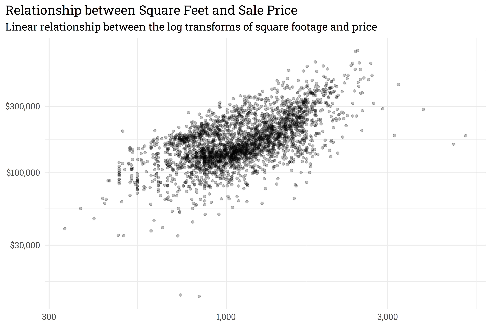
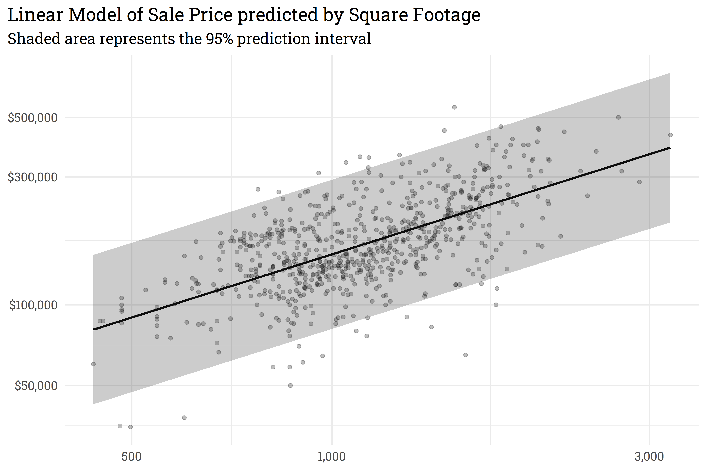
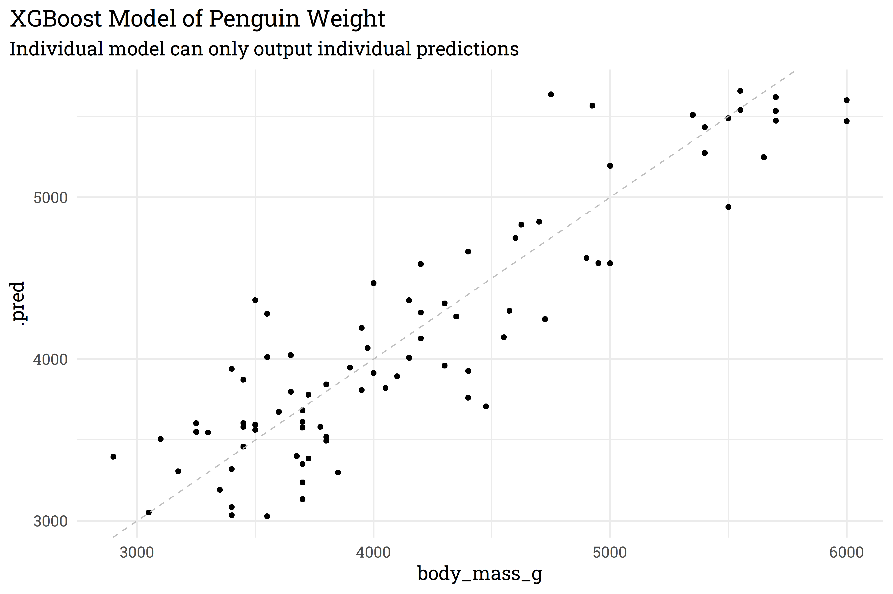

Sometimes, we want a model that generates a range of possible outcomes around each prediction and may opt for a model that can generate a prediction interval, like a linear model. Other times, we just care about point predictions and may opt to use a more powerful model like XGBoost. But what if we want the best of both worlds: getting a range of predictions while still using a powerful model? That’s where {workboots} comes to the rescue! {workboots} uses bootstrap resampling to train many models which can be used to generate a range of outcomes — regardless of model type.
Installation
Version 0.1.0 of {workboots} is available on CRAN. Given that the package is still in early development, however, I’d recommend installing the development version from github:
Code
# install from CRANinstall.packages("workboots")# or install the development versiondevtools::install_github("markjrieke/workboots")
Usage
{workboots} builds on top of the {tidymodels} suite of packages and is intended to be used in conjunction with a tidymodel workflow. Teaching how to use {tidymodels} is beyond the scope of this post, but some helpful resources are linked at the bottom for further exploration.
We’ll walk through two examples that show the benefit of the package: estimating a linear model’s prediction interval and generating a prediction interval for a boosted tree model.
Estimating a prediction interval
Let’s get started with a model we know can generate a prediction interval: a basic linear model. In this example, we’ll use the Ames housing dataset to predict a home’s price based on its square footage.
# relationship between square footage and priceames_mod %>%ggplot(aes(x = First_Flr_SF, y = Sale_Price)) +geom_point(alpha =0.25) +scale_y_continuous(labels = scales::dollar_format(), trans ="log10") +scale_x_continuous(labels = scales::comma_format(), trans ="log10") +labs(title ="Relationship between Square Feet and Sale Price",subtitle ="Linear relationship between the log transforms of square footage and price",x =NULL,y =NULL)

We can use a linear model to predict the log transform of Sale_Price based on the log transform of First_Flr_SF. In this example, we’ll train a linear model then plot our predictions against a holdout set with a prediction interval.
# train a linear modelset.seed(314)mod <-lm(Sale_Price ~ First_Flr_SF, data = ames_train)# predict on new data with a prediction intervalames_preds <- mod %>%predict(ames_test, interval ="predict") %>%as_tibble()
Code
# plot!ames_preds %>%# re-scale predictions to match the original dataset's scalebind_cols(ames_test) %>%mutate(across(everything(), ~10^.x)) %>%# add geomsggplot(aes(x = First_Flr_SF)) +geom_point(aes(y = Sale_Price),alpha =0.25) +geom_line(aes(y = fit),size =1) +geom_ribbon(aes(ymin = lwr,ymax = upr),alpha =0.25) +scale_y_continuous(labels = scales::dollar_format(), trans ="log10") +scale_x_continuous(labels = scales::comma_format(), trans ="log10") +labs(title ="Linear Model of Sale Price predicted by Square Footage",subtitle ="Shaded area represents the 95% prediction interval",x =NULL,y =NULL)
 With {workboots}, we can approximate the linear model’s prediction interval by passing a workflow built on a linear model to the function predict_boots().
Code
library(tidymodels)library(workboots)# setup a workflow with a linear modelames_wf <-workflow() %>%add_recipe(recipe(Sale_Price ~ First_Flr_SF, data = ames_train)) %>%add_model(linear_reg())# generate bootstrap predictions on ames_testset.seed(713)ames_preds_boot <- ames_wf %>%predict_boots(n =2000,training_data = ames_train,new_data = ames_test )
predict_boots() works by creating 2000 bootstrap resamples of the training data, fitting a linear model to each resample, then generating 2000 predictions for each home’s price in the holdout set. We can then use summarise_predictions() to generate upper and lower intervals for each prediction.
By overlaying the intervals on top of one another, we can see that the prediction interval generated by predict_boots() is a good approximation of the theoretical interval generated by lm().
Both lm() and summarise_predictions() use a 95% prediction interval by default but we can generate other intervals by passing different values to the parameter conf:
As this example shows, {workboots} can approximate linear prediction intervals pretty well! But this isn’t very useful, since we can just generate a linear prediction interval from a linear model directly. The real benefit of {workboots} comes from generating prediction intervals from any model!
Bootstrap prediction intervals with non-linear models
XGBoost is one of my favorite models. Up until now, however, in situations that require a prediction interval, I’ve had to opt for a simpler model. With {workboots}, that’s no longer an issue! In this example, we’ll use XGBoost and {workboots} to generate predictions of a penguins weight from the Palmer Penguins dataset.
To get started, let’s build a workflow and train an individual model.
Code
# load and prep datadata("penguins")penguins <- penguins %>%drop_na()# split data into training and testing setsset.seed(123)penguins_split <-initial_split(penguins)penguins_test <-testing(penguins_split)penguins_train <-training(penguins_split)
Code
# create a workflowpenguins_wf <-workflow() %>%# add preprocessing stepsadd_recipe(recipe(body_mass_g ~ ., data = penguins_train) %>%step_dummy(all_nominal_predictors()) ) %>%# add xgboost model specadd_model(boost_tree("regression") )# fit to training data & predict on test dataset.seed(234)penguins_preds <- penguins_wf %>%fit(penguins_train) %>%predict(penguins_test)
As mentioned above, XGBoost models can only generate point predictions.
Code
penguins_preds %>%bind_cols(penguins_test) %>%ggplot(aes(x = body_mass_g,y = .pred)) +geom_point() +geom_abline(linetype ="dashed",color ="gray") +labs(title ="XGBoost Model of Penguin Weight",subtitle ="Individual model can only output individual predictions")

With {workboots}, however, we can generate a prediction interval from our XGBoost model for each penguin’s weight!
Code
# create 2000 models from bootstrap resamples and make predictions on the test setset.seed(345)penguins_preds_boot <- penguins_wf %>%predict_boots(n =2000,training_data = penguins_train,new_data = penguins_test )penguins_preds_boot %>%summarise_predictions()
This particular model may be in need of some tuning for better performance, but the important takeaway is that we were able to generate a prediction distribution for the model! This method works with other regression models as well — just create a workflow then let {workboots} take care of the rest!